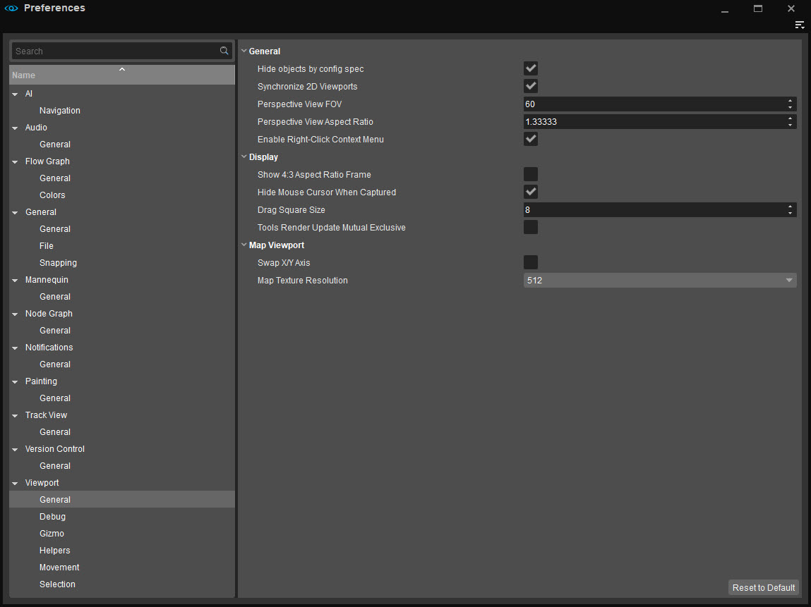

Overview
In this window you can change the default preferences of the Sandbox Editor in order to customize the look and functionality of Sandbox. You can find the preferences under Edit -> Preferences.
Every page has a button called Reset to Default. This will reset all the values in that specific page to their default settings, e.g. if you're in Audio -> General, clicking this button will reset those settings to default, but not the ones in AI -> Navigation.

Search Bar
The search bar in the top left will let you search for topics in the left column.
AI
Navigation
| General | |
|---|---|
| Disable Navigation Regeneration on Level Load | Disables the navigation regeneration when the level is loaded. |
| Initial Navigation Area height Offset | Initial navigation area height offset from the terrain when the area is created. |
Audio
General
| General | |
|---|---|
| Mute Audio | Mutes all audio coming from the game in sandbox, both when in Edit mode and in Game mode. |
Flow Graph
General
| ExpertOptions | |
|---|---|
| Automatic Migration | When enabled will automatically update and reconnect any port connection changes. |
| Show Node IDs | Display an ID for each node. |
| Show ToolTips | Display tooltip supplementary information when the mouse pointer is hovered over a node. |
| Edges On Top Of Nodes | Displays the lines (edges) in the Flow Graph on top of the nodes. |
| Spline Edges | When on, the lines (edges) in the Flow Graph will be smooth and curved; when off, they will be angular. |
| Highlight Selected Edges | Highlights the incoming lines (edges) from a node in red and outgoing edges in blue. |
Colors
Detailed control over the many various color schemes of the Flow Graph.
General
General
| General | |
|---|---|
| Show all windows in taskbar (requires restart) | Displays the Sandbox and its windows as a single tab on a taskbar. |
| Enable Source Control | Exposes the Sandbox to Perforce version control. |
| External Layers: Save only Modified | Saves only modified external layers (default = false). |
| Freeze Read-only external layer on Load | On level load, it freezes read-only external layers (default = true). |
| Console | |
| Show Time In Console | Displays time stamps in the Console. |
| Deep Selection | |
| Range | The distance of objects from the cursor to be included in Deep Selection (Default = 1). |
| Performance | |
| Priority To User Input after (ms) | When specified, forces the user input to be exclusively processed when the frame time takes longer than the user-defined threshold limit. |
File
| Files | |
|---|---|
| Backup on Save | Create a backup file (.BAK) when you save. |
| Text Editors | |
| Open C# solution instead of files | When this is on, opening a C# asset in the Asset Browser will open Visual Studio (or any other C# Text Editor you have specified in the Preferences). In Visual Studio, the whole solution will then be opened, including all associated C# assets. Note that the C# asset you double clicked originally will be opened in the Visual Studio window. When this is off, only the C# asset will be opened in the Visual Studio window, not the whole solution. |
| C# Text Editor | Enter the name of the Text Editor used for C# Editing. |
| Scripts Text Editor | Enter the name of the Text Editor used for Script Editing. |
| Shaders Text Editor | Enter the name of the Text Editor used for Shader Editing. |
| BSpace Text Editor | Enter the name of the Text Editor used for BSpace editing. |
| Standard Temporary Directory | Specify the location of the default Temporary directory (default = <root>\Temp). |
| Texture Editor | Enter the name of the Texture Editor used. |
| Animation Editor | Enter the name of the Animation Editor used. |
| Auto Back-up | |
| Enable | Enable or disable automatic backing-up of your work. |
| Auto Backup Interval (Minutes) | Set how often Auto Backup is scheduled. |
| Maximum Auto Backups | Set the maximum number of Auto Backups that are made. |
Snapping
| Grid Snapping | |
|---|---|
| Grid Size | Customize the size of each grid step. Translating an object will have it snap every nth unit. |
| Grid Scale | Grid size multiplier. If grid size is 4 and scale is 2, grid size will be 8. |
| Grid Major Line | Only used in 2D viewports (ex. Front, Left, Top). In these viewports, every nth line will be a darker color. |
| Angle Snapping | |
| Angle Snap | When rotating, the object will only be transformed by n degrees from its initial rotation at a time. |
| Vertex Snapping | |
| Vertex Cube Size | Determines the size of the vertex cubes when Vertex Snapping is enabled. |
Mannequin
General
| General | |
|---|---|
| Default Preview File | Default: gamesdk/animations/mannequin/preview/sdk_playerpreview1p.xml. |
| Size of tracks | Specify the size (height) of the tracks for the dope sheet. Min 14, Max 32. |
| Hold Ctrl to Snap Scrubbing | Snaps the cursor to the time ruler. |
| Timeline Wheel Zoom Speed | Controls the sensitivity/speed when using the mouse wheel to zoom on the Mannequin timeline. |
Node Graph
General
| General | |
|---|---|
| Dragging button | Controls which button is used to navigate around the graph by dragging. |
Notifications
General
General | |
|---|---|
| Allow Pop-Ups | Enable/disable notification pop-ups for warnings, asserts and errors. These will still be stored in both the notification list and history. |
| Combine Notifications | Enable/disable warnings, asserts and errors being combined into a single notification when the max number of notifications is displayed in the notification list. |
| Max Notification Count | Maximum number of notifications displayed before they are combined into a single notification in the notification list. |
Painting
Adjusts the Hardness and Radius Sensitivity options that affect Terrain Editor's brush. For more information, please refer to the Terrain Editor page.
General
| General | |
|---|---|
| Hardness Sensitivity | The rate at which the Hardness of the brush changes per pixel. |
| Radius Sensitivity | The rate at which the Outside Radius of the brush changes per pixel. |
Alternatively, you can adjust the Sensitivity values by scrolling up or down while holding Alt + LMB. For more information, please refer to the Terrain Editor page.
Track View
General
| General | |
|---|---|
| UI refresh rate (fps) | Defines the maximum refresh rate of the Track View window when the animation is active. So if the animation speed is 30 frames per second, and the UI Refresh Rate value is 15 frames per second, the track-viewing will be updated approximately on every second frame of the animation. |
Version Control
General
| General | |
|---|---|
| Version Control |
|
Viewport
General
| General | |
|---|---|
| Hide objects by config spec | Objects can be hidden by config spec, for example some objects are only shown in Very High spec. |
| Synchronize 2D Viewports | Synchronize the 2D Viewports to move and correspond to each other. |
| Perspective View FOV | The extent of the level observable in the Viewport. |
| Perspective View Aspect Ratio | Set the length of the aspect ratio of the Viewport (where the height is 1) e.g. a value of 1.33 would give a ratio of 1.33:1 (4:3) or 1.78 a ratio of 1.78:1 (16:9). |
| Enable Right-Click Context Menu | Enable or disable the menu that pops up when right-clicking the mouse inside the Perspective Viewport. |
| Display | |
| Show 4:3 Aspect Ratio Frame | Display a 4:3 aspect ratio frame that shows what is visible in game mode. |
| Hide Mouse Cursor When Captured | Hide or show mouse cursor in Perspective Viewport. For example, when turning the Viewport camera. |
| Drag Square Size | Define a movement threshold to prevent accidental moving of objects when selecting. |
| Tools Render Update Mutual Exclusive | Makes it so only the viewport which is in focus is updated. This is useful when working on multiple tools that have their own viewport but the user is only interested in updating the current one he's working with (this improves performance since not all viewports need to be updated). |
| Map Viewport | |
| Swap X/Y Axis | Swaps the X and Y axis, useful for particle placement. |
| Map Texture Resolution | Set the resolution of the displayed map from 128 to 4096. |
Debug
| Warnings | |
|---|---|
| Warnings Icons Draw Distance | Define how far to display warning icons in the Perspective Viewport. |
| Show Scale Warnings | Place an icon next to and mouse-over text on objects that have been scaled. "Warning: Object Scale is not 100%". |
| Show Rotation Warnings | Place an icon next to and mouse-over text on objects that have been scaled. "Warning: Object is rotated non-orthogonally". |
Gizmo
| Axis Gizmo | |
|---|---|
| Axis Gizmo Size | The size of the X/Y/Z axis gizmo. |
| Text Labels on Axis Gizmo | Display X/Y/Z axis labels. |
| Interaction for Rotation Gizmo |
For more information on these rotation styles, see this page. |
| Helpers | |
| Scale | The size of various on-screen helpers, including AIAnchors, Tagpoints, CoverSurfaces, etc. |
| Ruler | |
| Ruler Sphere Scale | Scale the size of the locator spheres when using the Ruler tool. |
| Ruler Sphere Transparency | Set the transparency level of the locator spheres when using the Ruler tool. |
| Tag Point | |
| Tagpoint Scale Multiplier | Scale the Tagpoint helper sphere in addition to the base "Helper Scale" value. |
Helpers
| Setting | Description |
|---|---|
| Shrink Helpers in Distance | Shrinks helpers that are at a certain distance or further away. |
| Hide Helpers in Distance | Hides helpers that are at a certain distance or further away. |
| Hide Labels Distance | Hides labels that are at a certain distance or further away. |
| Hide Selection Helpers in Distance | Hides selection helpers that are at a certain distance or further away. |
| Render Icons on Top of 3D Objects | When enabled, shows helper icons in front of 3D objects. |
| Highlight Materials | |
| Breakable Materials | Highlights materials that are breakable. Surfaces will flash green that are breakable |
| Missing Surface Types | Highlights surface types that are missing. Surfaces will flash red that are missing a surface type |
| Designer Volumes | |
| Area and Clip Volumes | Fills area and clip volumes. |
Movement
| General | |
|---|---|
| Viewport Panning Style |
|
| Speed Height Relative | When enabled, adjusts the speed of camera movement based on the height of the camera above terrain or objects. The camera speed is multiplied by the height in meters (clamped to a range of 1-1000). This lets you move precisely when close to the ground, or quickly to different parts of the level, without constantly adjusting the camera speed slider. |
| Collisions | |
| Terrain Collision | Toggles terrain collision on and off. When turned on, the camera does not go through the terrain when hitting it, but will always move along it. This option also affects Speed Heigh-Relative: when on, camera height is measured above terrain or objects; when off, terrain only. |
| Object Collision | Toggles object collision on and off. When turned on, the camera does not go through objects on the terrain when hitting them, but will always move along them. |
| Speed | |
| Movement Speed | The movement speed of all movements made in the Viewport. |
| Rotation Speed | The movement speed of the mouse while controlling the Viewport camera. |
| Fast Movement Multiplier | Fast camera movement speed multiplier when Shift is pressed and held, i.e. a value of 2 will double the movement speed. |
| Wheel Zoom Speed | The movement speed of the mouse wheel camera zoom. |
| Mouse Wheel Behavior |
|
Selection
| General | |
|---|---|
| Highlight Selected Geometry | Will add a highlight effect to any selected geometry. |
| Highlight Selected Vegetation | Will add a highlight effect to any selected vegetation instance. |
| Highlight Geometry On Mouse Over | Highlight geometry under the cursor. |
| Selection Preview Color | |
| Prefab Bounding Box | Color selection for Prefab Bounding Box. |
| Group Bounding Box | Color selection for Group Bounding Box. |
| Entity Bounding Box | Color selection for Entity Bounding Box. |
| Bounding Box Highlight Alpha | Amount of alpha added on the Bounding Box. |
| Hightlight Color | Controls the color of highlighted objects. |
| Selection Color | Controls the color of selected objects. |
| Outline width | Width of the outline of selected objects. |
| Outline Ghost Alpha | Controls the amount of blending of the ghosted outline. |
| Geometry Highlight Alpha | Controls the amount of blending of the highlight and selection colors with the scene. |
| Solid Brush Geometry Color | Color of the solid brush geometry. |
| Child Geometry Highlight Alpha | Amount of alpha added on the child geometry. |